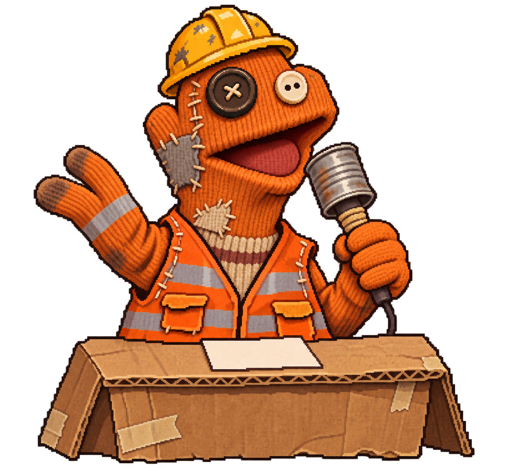

Una aventura de faena, cuidado y evidencia
Maite:
Rumbo al Salar
Tu primer turno empieza con una pregunta sencilla: ¿quién está en condiciones de conducir?
Creado con Codex
Prototipo jugable · Capítulos 1 y 2: El primer turno y La Ruta del Agua
CAPÍTULO 1 DE 5 · PASO 1/4
Habla con la Señora Nancy
Campamento HorizonteAtardecer · Turno de tarde
Verde: transitable · Rojo: bloqueado · B para ocultar
WASD / ←↑↓→ mover · E interactuar · clic para caminar · B zonas de paso
M
Puzle 1 · Reconstrucción del turno
Las horas del relevo
Reconstruye la secuencia del turno. Elige una tarjeta y luego el horario que le corresponde; puedes cambiarla de lugar antes de comprobar.
Documentos del turno
Despacho de busesEl bus de relevo regresó a las 22:40.
Registro radialEl aviso se emitió 50 minutos antes del regreso del bus.
Planilla de colaciónLa pausa del equipo quedó anotada a las 21:10.
Registro de llamadas · resumenLa llamada entró media hora después de la salida marcada.
Elige una tarjeta y asígnala a una hora.
Puzle 2 · Acceso seguro
Deja libre el paso del patio
Despeja el carril verde para sacar la camioneta. Mueve carros, cajas y vallas solo en la dirección que ocupan. La zona roja está aislada: ninguna pieza puede entrar ahí.
🟩 Carril de salida🚧 Zona aislada: no ingresar🗄 Gabinete fijo
Selecciona una pieza.
Movimientos: 0
Capítulo 2 · Puzle 1 · Dos circuitos, una alerta
Tablero de trazabilidad
Coloca cada registro en la ruta que le corresponde: hacia la faena o hacia el mar. La observación de la vega aún necesita seguimiento.
💧Circuito terrestre · agua desalinizadaPlanta → H-17 → Faena🌿 Vega junto al trazado; no es un tercer circuito
🌊Circuito marino · salmuera de rechazoPlanta → emisario costero → mar
La vega está junto a la ruta terrestre, pero su observación no demuestra por sí sola una causa.
01:00
El cronómetro comienza al iniciar.
💧 Terrestre: planta → H-17 → faena · 🌿 Vega junto al trazado
🌊 Marino: planta → emisario → costa
Se agotó el tiempo de esta ronda
No hay penalización. Puedes revisar las fuentes, reintentar o salir a explorar.
Fuentes y pistas del caso
- H-17 y la unión húmeda están en la tubería que lleva agua a la faena.
- La vega está junto a esa tubería; su observación requiere seguimiento.
- El emisario devuelve salmuera al mar y se revisa por separado.
Capítulo 2 · Puzle 2 · Repartir y justificar
Balance de la maqueta
Reparte ocho fichas entre Planta, Reserva y Prueba. Es un ejercicio didáctico; no representa caudales ni instrucciones de operación.
01:00
El cronómetro comienza al iniciar.
Selecciona una ficha numerada y luego una bandeja.
Se agotó el tiempo de esta ronda
No hay penalización. Puedes revisar las notas, reintentar o salir a explorar.
Notas encontradas
Cápsula opcional · 31 segundos
Noticiero del Salar

Último minuto: la hoja sin firma fue vista por última vez en la oficina.
31 segundos
Paso 1 completado
CONTINUARÁUn relevo a tiempo
El turno queda registrado con una pausa acordada. Maite conserva el aviso y deja el seguimiento para el equipo entrante.
¿Empezar una partida nueva?
La partida guardada actual se reemplazará.